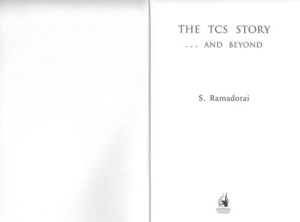

Library › Business & Startups
The TCS Story... and Beyond — Summary & Key Lessons

How a seven-person consulting unit inside Tata became a $100 billion software giant without ever making a product you can touch.
📖 OPEN THE FULL INTERACTIVE BREAKDOWN →🌐 Read it in Hindi, Hinglish, Gujarati, Tamil & 22 more languages — free, with audio.
💡 The Big Idea
TCS began in 1968 as a data-processing unit inside Tata, punched punch-cards for utilities, and grew into the first Indian IT company worth $100 billion. Ramadorai, CEO from 1996 to 2009, tells how TCS bet early on software exports when India barely had computers, survived the Y2K gold rush without becoming a body shop, built the Global Network Delivery Model (follow-the-sun development across continents), and scaled from $100 million to $6 billion under his watch. The deeper story is cultural: quiet execution over hype, long customer marriages over one-night deals, and a services firm that professionalized before India had a playbook.
🧠 The 8 Key Lessons
Lesson 1: The Patient Decade Before the Boom
Punch Cards to Exports
TCS spent its first two decades on unglamorous work: payroll processing for Tata firms, bureau services, early Swiss and US contracts secured by Faqir Chand Kohli. While Silicon Valley made products, TCS made capability. The boom of the 1990s paid off two decades of quiet competence; companies that started at the boom had no muscle memory.
📖 Example: Kohli pushed TCS into software exports in the 1970s when India's own computer policy strangled hardware imports; TCS trained engineers on borrowed machines and won SEBU (Swiss) and other contracts years before competitors knew outsourcing existed. Read the full example →
⚡ Do this: Pick one capability your industry will need in ten years and become quietly excellent at it before demand announces itself.
Lesson 2: Y2K: The Windfall That Could Have Killed
The 1999 Gold Rush
Y2K remediation flooded Indian IT with billions in low-skill work. TCS took the money but refused the identity: it used Y2K profits to build CMM-level processes, training infrastructure and domain practices (banking, insurance, retail) so clients stayed after the panic ended. Windfalls test character; the teams that treat them as fuel for capability building compound, the rest evaporate with the trend.
📖 Example: While many Y2K shops shrank after 2000, TCS grew through the dot-com winter by converting remediation clients into long-term outsourcing relationships, seeding the giant healthcare and BFSI practices that drive revenue today. Read the full example →
⚡ Do this: List your current windfall. Write down which permanent capability you are building with it, or admit you are renting the good times.
Lesson 3: Industrialize Delivery: The Global Network Delivery Model
Follow the Sun
TCS turned consulting craftsmanship into a factory without losing quality: reusable components, CMMI processes, and the Global Network Delivery Model where work moved between India, Europe and America as the sun moved. Software as a repeatable, measurable service was the actual invention, and it made 100,000-person delivery conceivable.
📖 Example: A US bank's fix might be coded in Mumbai overnight, tested in Budapest by morning, and deployed in New York the same day, with SLAs tracked centrally. Clients bought certainty, not heroics. Read the full example →
⚡ Do this: Document your service as a repeatable pipeline with measurable stages. What cannot be measured cannot be scaled beyond you.
Lesson 4: Customer Marriages Outlast Market Cycles
Tata Trust, Decade Clients
TCS's biggest accounts ran decades: NTT Data relationships, Deutsche Bank, state utilities. The culture trained engineers to solve the client's problem even when unbilled, and to staff accounts for continuity rather than churn. Trust reduced sales costs to near zero on renewals and survived every downturn.
📖 Example: During the 2001 to 2003 tech winter, clients cut everywhere except vendors they trusted; TCS's long-marriage accounts kept teams whole while pure price-shoppers evaporated. Read the full example →
⚡ Do this: Identify the customer relationship that would survive your own worst quarter. Invest unreasonably in it this year.
Lesson 5: Scale Is a Culture Question, Not a Headcount Question
From 7 People to 160,000
Ramadorai's hardest problem was not winning work, it was keeping quality and values while growing from thousands to hundreds of thousands: ILP (Initial Learning Program) trained freshers for months, ultimatix later digitized the employee lifecycle, and Tata values were drilled into onboarding. Companies break at scale because culture was never codified, only embodied in early people.
📖 Example: TCS's training campus in Trivandrum and later Hyderabad processed tens of thousands of freshers a year through a standardized curriculum, making 24-year-olds from tier-2 colleges deliver to Swiss bank standards within a year. Read the full example →
⚡ Do this: Write your culture as a teachable curriculum with examples and tests. If it cannot be taught in 90 days to a stranger, it cannot scale.
Lesson 6: Going Public Without Losing the Long Game
The 2004 IPO
TCS listed in 2004 at about $1.2 billion, instantly making thousands of employees wealthy and answering questions about Tata's commitment to services. The discipline: quarterly market pressure met a company that had already built multi-year visibility into revenue. Going public is survivable when the operating rhythm was public-like long before the ticker.
📖 Example: The IPO was India's largest at the time and TCS became the most valuable Tata company within years, funding global acquisitions (Citi's BPO arm, TCS China) without debt stress. Read the full example →
⚡ Do this: Operate to the standard of your next stage (public, global, regulated) one year before you arrive there. Rhythm is built in private.
Lesson 7: Build Where the Talent Lives, Sell Where the Clients Are
China, Latin America, Nearshores
TCS opened China delivery centers in 2002 and Latin American hubs to serve clients locally and hedge visa dependence. The strategy: talent pools and client proximity matter more than cost alone. Distributed delivery became geopolitical insurance long before geopolitical risk was fashionable.
📖 Example: TCS China served Japanese and local multinationals from Hangzhou and Tianjin with bilingual teams, and Latin American centers gave US clients same-time-zone service that pure offshore could never match. Read the full example →
⚡ Do this: Draw your delivery map against two risks: visa policy and client proximity. Add one delivery geography in the next year that hedges both.
Lesson 8: Services Can Compound: The $100B Question
And Beyond
The world said services companies cap out; TCS crossed $100 billion in market value by 2018 and later became India's most valuable company, outcompeting many product firms on margin and durability. The compounding engine: customer trust, process repeatability, talent pipeline and patient ownership (Tata held, never sold). The moral: there is no inherent ceiling on services done with industrial discipline.
📖 Example: Under N. Chandrasekaran and later Rajesh Gopinathan, TCS's margin stability through 2008, 2020 shocks beat nearly every global peer, and its market cap crossed $200 billion in the 2020s, the quiet compound of the 1968 punch-card bureau. Read the full example →
⚡ Do this: Write the ten-year compounding logic of your business in three lines: what retains, what repeats, what never gets sold. If a line is missing, that is your growth ceiling.
✅ 5-Step Action Plan
- Invest one decade-level capability before its demand cycle starts; publish your intent internally to stay honest.
- Convert every windfall into permanent capability: training, process, domain depth.
- Turn your service into a measured pipeline with geography-hedged delivery.
- Codify culture into a 90-day teachable curriculum with assessments.
- Protect one customer relationship so deeply it survives your worst quarter.
⚠️ When This Doesn't Work
This is a chairman's memoir: Tata-house loyalty shapes the narrative, failures (the 2005 to 2006 attrition pain, missed product bets) get gentle treatment, and rivals like Infosys receive respectful but thin coverage. Salary and layoff decisions are described from the board's side. Use it for institutional lessons, not as a balanced industry history.
💀 The Graveyard Proves It
🐅 Ramalinga Raju — Riding a Tiger, Not Knowing How to Get Off. Burn: ₹7,000 crore fake cash. Read the full case study →
💬 Best Quotes from The TCS Story... and Beyond
- “Experience certainty: that was the brand promise, and every delivery had to keep it.”
- “In services, your process is your product.”
- “Grow with the customer, or eventually grow without them.”
Interactive version: mark lessons as read, listen in your language, share quote cards.